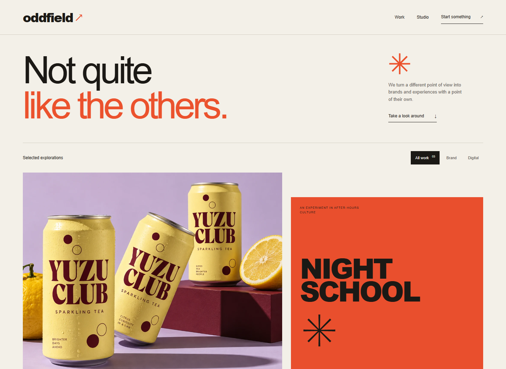
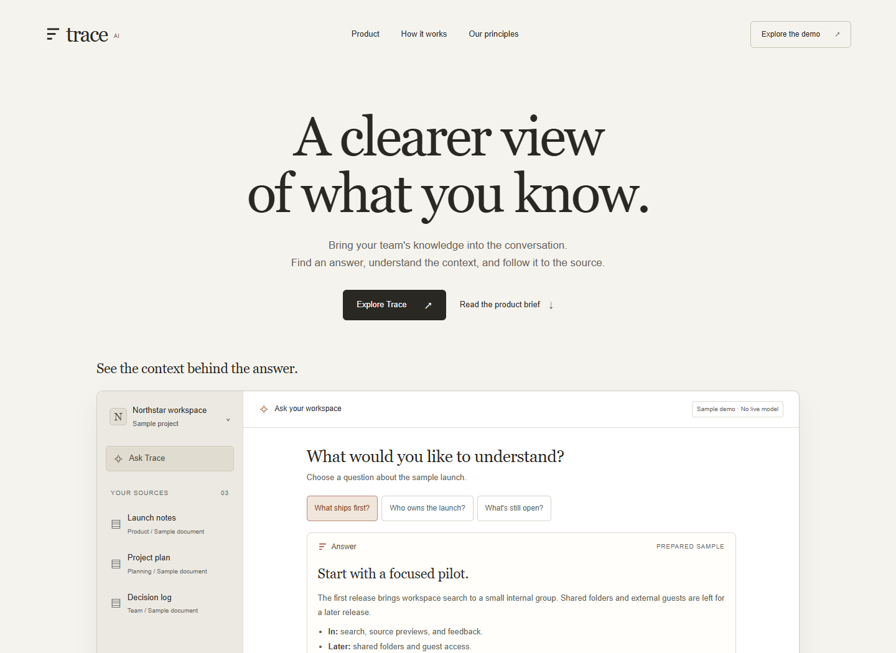

Two companies.
Different instincts.
A design studio with a point of view.
An AI company with a clear
product story.

01 / DESIGN COMPANY
Oddfield
Original identities, project stories, and a brief you can build.

02 / AI COMPANY
Trace
A focused workspace demo with clear answers and inspectable sources.